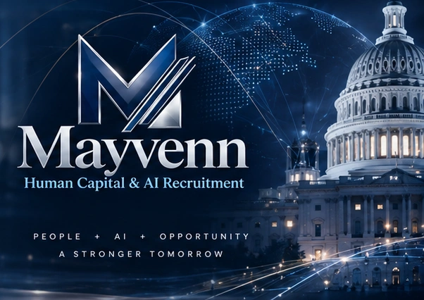

Artificial Intelligence.
Human Capability.
Enterprise Impact.
Reverse engineering systems, people, and opportunities
for government, corporate, and emerging AI markets.

OUR CORE CAPABILITIES
Human Expertise.
AI Acceleration.
Real-World Results.
Talent Acquisition
Cleared, specialized, and mission-ready talent at scale.
AI Workforce Solutions
Integrating human capability and AI to build what's next.
Proposal & Capture Support
Strategic talent, win themes, and execution support.
Expert Evaluation
Subject matter experts for AI, technical, and operational assessments.
SECTORS WE SERVE
Driving Impact Across
Mission-Critical Sectors.


EXECUTIVE LEADERSHIP
Proven Leadership.
Real-World Impact.
Strategic vision, operational expertise, and a shared commitment to people, mission, and possibility.
Meet Our Leadership →FEDERAL CONTRACTING PROFILE
Federal Entity Identifiers
Mayvenn federal entity identifiers supplied for reference. Verify current registration status through SAM.gov.
People. AI. Opportunity.
Intelligence is only as consequential as the human capability behind it.
Initiate a Strategic Conversation →